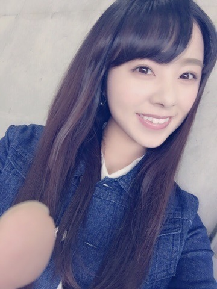
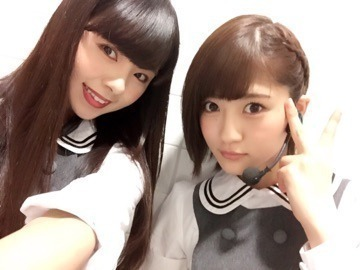
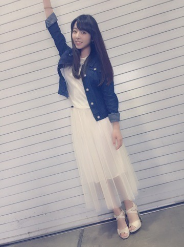
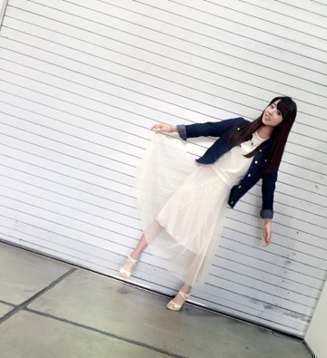
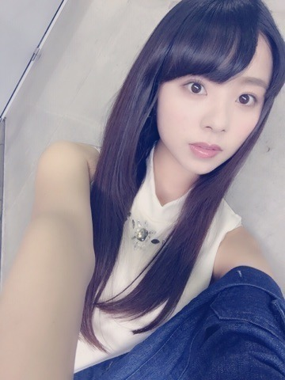

| 2015/05 05 Tue | 川村真洋 のぎ天にて、私とち ーのマリンタワー& 私とさゆのモウドク テン見たかな♡？ 握手会てんきゅ...。 |
こんにちわ.＊
まにだよ． ろってぃ−だよ♡

ここ最近の趣味&はまってることは...
♩ヨーグルトにハチミツを入れること。笑
♩水をストローで飲むこと。
♩友達と電話。
♩寝る時に自分の寝言を録音する。です。
はい！
横浜，握手会2日間お疲れ様でした．
そして ありがとうございました♡
ゴールデンウィーク中ということで，沢山の方が来てくださいました.＊
すごく嬉しかったです⊂((・x・))⊃
そして個人的にも今回の握手会は
何だかねぇ，本当に面白いこと，楽しいこと，感動したこと色々あったなぁぁ♡.＊
まず1日目の全握は まに若月ペアでした．

若月推しの皆さん，Rotty夢の皆さん，本当にありがとうございました♡
初めましての方も沢山いらっしゃって本当に嬉しかったです。
又，個握&全握でお会いしたいです♡
待ってます....＊
2日目！ 個別握手会.＊
今回のまに私服は............

デニムジャケット→yumetenbo
トップス→chille anap
スカート→chille anap

スカート，，，
中の生地、外の生地の長さのバランスが気に入ったポイント♡
デニムジャケット ，，，
ボタンに全部 シルバーのキラキラが入ってるんです。それが気に入ったポイント♡笑
後，トップスの首元も
シルバーでキラッて感じです...♡

Rotty夢さんの暖かさを又改めて感じた、握手会でした.＊
Rotty夢さん達が、1人のRotty夢さんにサプライズをしかけて、私の目の前で嬉し涙を流したり，
まひろが歌を歌うと，感動して涙してくれたり
私に会えたことに嬉し泣きしてくれたり...
私は本当に 沢山の素晴らしい人に支えられているんだなぁ...と感じました。
この方達のためにも、自分はもっともっと頑張っていかなきゃな！と思いました。
皆さん いつも本当にありがとうございます！
大好きです！
後、沢山笑かしてくれますよね（＾ω＾）笑
まあ色々とあるんですけど、例えば...
握手会のレーンで一生懸命，
「命は美しい」のダンスを練習して来て、
まひろの前で練習の成果を見せてきたり...
ほんまに爆笑しました♡
握手会にて、『まにのダンス講座』開催中♡笑
っていうことで、
今日も1日、楽しく楽しく頑張りましょー。
毎日毎日 ポジティブポジティブ～♡
楽しいよ～⊂((・x・))⊃♩
これからもよろしくね？
まにより...ろってぃ−より。